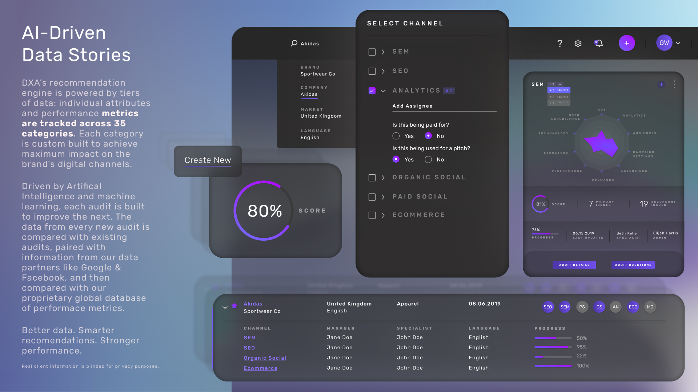
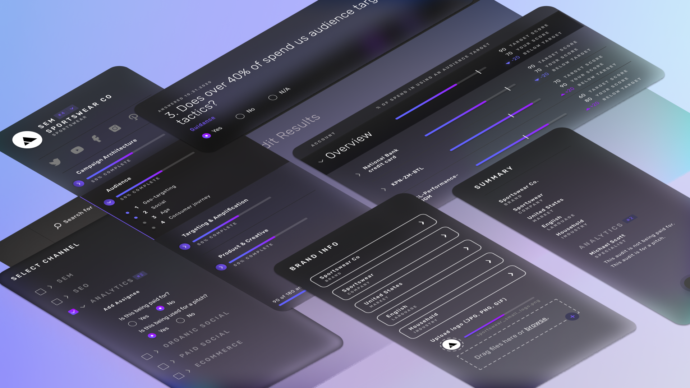
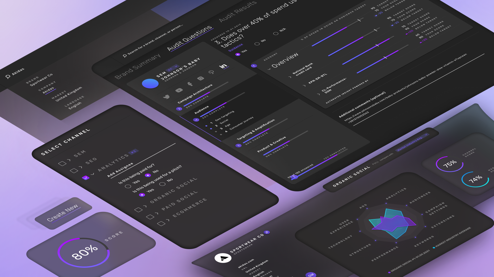

Digital Experience Audit
DXA turned fragmented digital-performance inputs into a structured audit workflow: create the audit, move through channel-specific questions, compare benchmarks, and turn the output into recommendations teams could use in client strategy conversations.

Audit data was too fragmented to act on.
Marketing and strategy teams needed a repeatable way to evaluate brand performance across digital channels, but the inputs were scattered across questions, benchmarks, channel categories, and reviewer judgment. The design challenge was not just making a dashboard. It was turning a messy evaluation process into a workflow teams could run, explain, and trust.
That made DXA a strong product-design problem: the experience had to guide structured input, keep progress legible, support benchmark comparison, and translate findings into a recommendation story.
From audit setup to recommendation output.



Complex operations, made clear enough to run.
Boulevard's product touches scheduling, payments, client management, marketing, AI-assisted efficiency, and the daily operations of self-care businesses. DXA is relevant because it shows the same design muscles in another complex operating environment: simplify the workflow, preserve trust, surface the right information, and make the product reliable enough for repeated use.
- Structured a complex audit flow into setup, channel review, questionnaire progress, results, and recommendations.
- Balanced usability, data visualization, workflow clarity, and stakeholder-ready outputs.
- Extended enterprise product patterns that had to scale across teams, brands, and client-facing strategy work.
- Kept the design outcome tied to measurable product quality, not just presentation artifacts.
Award-recognized product UX.
DXA received Red Dot recognition for Brands and Communication Design and Indigo recognition across digital design, UX, interaction, and tools/utilities categories.
Proof: Red Dot entry and Indigo entry.